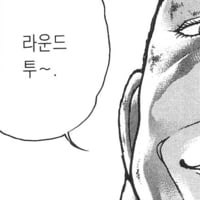

잘했다 박위.. 이제 일어나 코레일과 싸우길
댓글
그냥 죽지말고 싸우다 죽으란 뜻인가?
엎드려 살지 마라 서서 죽어라
좀 서보라고!!!! 왜 서질 못하는데!!!!!!!
엎드려 살지 마라. 일어나 죽는 거다
밥그릇 크기에 불만이 있다면 밥그릇을 드럼마냥 두들겨라
그러면 짝 하고 쪼개질 것이다
얼마전에 ktx타고 내려서 오는데 한 장애인분 내려오고 직진해서 다 내려와서 꺾어야 하는데 바로 꺾어서 뒤집어지는거 직원들이 잡아주더라..
일어나라고??
하반신장애인보고 일어나서 싸우라니 너무하노
악마다이
ㄹㅇㅋㅋ
박위 영상들 다 보고 저 영상봤으면 이새끼가 진짜로 시스템문제제기할려고 올린건지 공익요원 묻을려고 올린건지 파악했을텐데 안타깝다
똑바로 서라 박산!
못일어남 ㅠㅠ
박위벌레
한겨레 ㅋㅋㅋ
ㅋㅋ 좆도 모르고 본인의 도덕적 허영심으로 저렇게 말하는듯한 느낌
박위선양
???: 도와줘 전장연!!
???: 도와줘 박위!!
대상의 호불호를 떠나, 타이틀 어휘만 봐도 장애인을 자기 주장의 뒷받침할 도구로만 보는 듯 ㅋㅋ
페미도 그렇고 저런 극단주의 혁명파들은 딱 이 논리임
'이 가치를 수호하기 위해서는 다른 것은 희생되더라도 강행해야만 해 그렇지 않으면 세상은 바뀌지 않아'
뭐 코레일의 적자, 그로인한 종사자들의 업무과중, 공익근무요원이 근거없는 강제노동인 점 등 이런거 고려해서 양보해가며 문제를 풀려고 하면 안바뀐다는거지
그래서 전장연도 그걸 명분으로 해서 그따위 패악질을 부리는거고
근데 진짜로 전쟁하거나 전쟁에 준하는 프랑스급의 혁명을 할게 아니라면
결국 문제가 완전히 해결되려면 결국은 정상절차의 코스를 다 밟는게 제일 빨랐던 경우가 대더수임. 정상보다 빨리 이뤄졌다? 무언가를 스킵했다? 다 나중에 몇배로 이자 붙여서 돌아오게 되어있음
비장애인들도 무수한 사고에 노출되어있고, 불가항력적으로 발생하는, 또는 필연적으로 발생하는 휴먼에러가 있는건데,
법 조항에 '하여야 한다' 하나 적혀있다고 무한책임 전가하는게 맞는건 아니지.
법은 현실과 동떨어진 경우가 많아서, 뒤쳐질 때도 있지만 존나 앞설 때도 있음.
결국 인프라나 노하우가 부족한 상태에서 어떻게 무결한 안전을 보장할 수 있겠냐고...
하지만 화자 본인은 절대 희생하지않음
어허! 무~거운 혁명의 과업을 짊어진 분께 무슨 소리냐!!

근데 이 사건이 문제된 건 휠체어 탑승을 위한 편의를 요구했기 때문이 아니잖아?
왜 문제를 호도하는거지?
박위 일어날 수 있었어?
장애인 인권 어쩌구 하면서 똑같이 장애인인 공익의 권리는 왜 생각을 안해주는 건지 참
정치하려는가보네 쓸데없이 에너지 쏟지마라 ㅋㅋ 뭔 말같지도 않은 소리 하면 경력 파봐라 다 이유가 있다.
??? : 예의없게 앉아만 있는건가